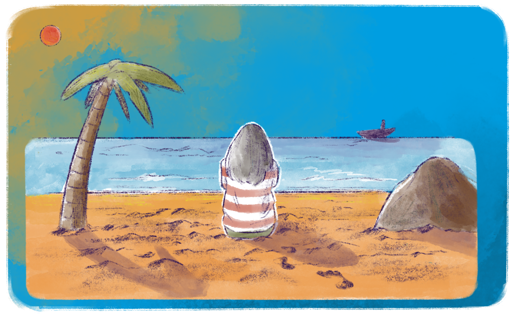

Hora de começar a escrever
Mais do que nunca, é preciso que os estudos sejam aprofundados e que nossa experiência na EPT seja valorizada, pois como diz Gramsci:
Instrui-vos porque teremos necessidade de toda vossa inteligência. Agitai-vos porque teremos necessidade de todo vosso entusiasmo. Organizai-vos porque teremos necessidade de toda vossa força.

Título: O caminho nunca se encerra
Fonte: Prosa (2025g).
Com o desejo de um bom processo de escrita e lembrando que o caminho nunca se encerra, pensemos como Saramago (2021, p. 14):
A viagem não acaba nunca. Só os viajantes acabam. E mesmo estes podem prolongar-se em memória, em lembrança, em narrativa. Quando o visitante sentou na areia da praia e disse:
“Não há mais o que ver”, saiba que não era assim.
O fim de uma viagem é apenas o começo de outra. É preciso ver o que não foi visto, ver outra vez o que se viu já, ver na primavera o que se vira no verão, ver de dia o que se viu de noite, com o sol onde primeiramente a chuva caía, ver a seara verde, o fruto maduro, a pedra que mudou de lugar, a sombra que aqui não estava. É preciso voltar aos passos que foram dados, para repetir e para traçar caminhos novos ao lado deles. É preciso recomeçar a viagem. Sempre.
A seguir, sugerimos alguns exemplos de trabalhos de conclusão de curso com estrutura semelhante à referenciada. Os assuntos abordam temas relacionados, de alguma forma, ao curso. Eles estão aqui para inspirá-lo a iniciar a sua escrita ou para auxiliá-lo em momentos de dificuldade na produção.
- Reflexões sobre a identidade do professor na Educação Profissional e Tecnológica: desafios e perspectivas, de Silva (IFPB, 2023);
- Compreendendo a formação continuada de docentes na educação profissional e tecnológica: novos cenários e desafios, de Da Silva (IFES, 2023);
- O currículo adaptado: (re)pensando a formação profissional em dança, de Carneiro (IFPB, 2022);
- Gestão escolar comprometida com a leitura: um desafio pedagógico, de Weber (IFRS, 2016);
- A ação dos gestores e coordenadores pedagógicos na educação: tecendo caminhos para reflexão, de Werner (IFRS, 2019);
- Tecnologias da informação e comunicação (TIC) como instrumento motivador dentro do processo ensinoaprendizagem na Educação Profissional de nível médio, de Leite (IFG, 2021);
- As tecnologias digitais: importância e desafios para o fazer docente e o protagonismo discente, de Santana (IFPB, 2022);
- O uso das TICs na educação profissional e tecnológica de nível técnico: ensino híbrido, de Sales (IFES, 2023).